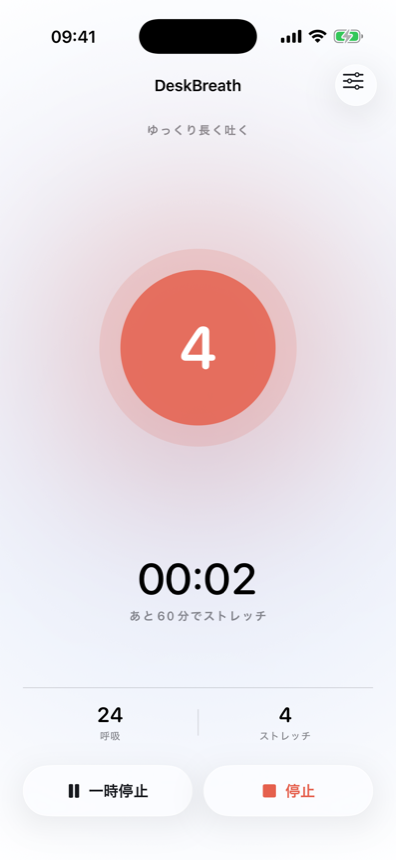
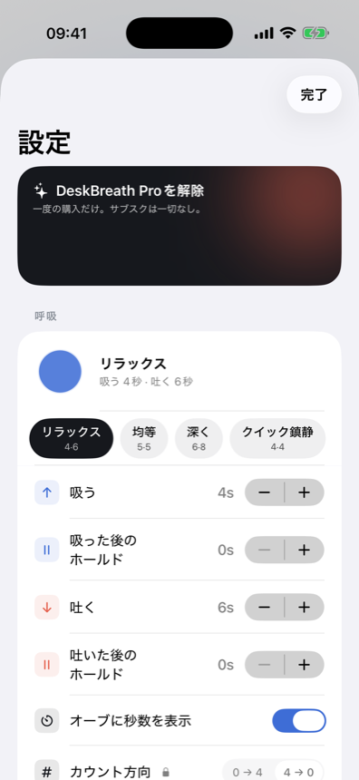
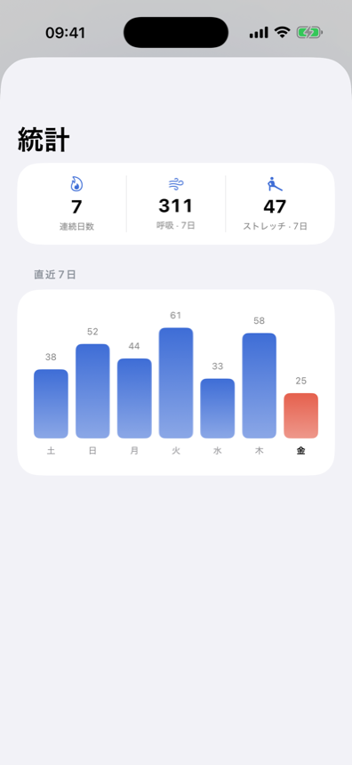

オンライン会議と作業の合間、呼吸はつい忘れがちです。デスクブレスは呼吸オーブをタップひとつで開始でき、吸う・止める・吐くが切り替わるたびにはっきりした触覚で感じられます。
ボックス呼吸、4-7-8、または自分だけの秒数設定 — 登録不要でメニューバーやアプリからすぐ無料で始められます。
吸う・止める・吐くが切り替わるたびに違う触覚で感じられるので、画面を見なくてもリズムを保てます。
30・60・90・120分ごとの通知が、立ち上がって肩を回し、姿勢を整えるタイミングを教えてくれます。実際に行ったときだけ「やった」を押して記録します。
猫背やこりは、通知を何回スキップしたかなんて気にしてくれません。デスクブレスは実際にストレッチしたときだけ「やった」で記録し、セッションは10時間で自動終了 — 退勤後は通知が来ません。
呼吸の輪をタップひとつで開始・一時停止し、吸う・止める・吐くが切り替わるたびに違う触覚を感じてください — 画面を見る必要はありません。
小さな呼吸の輪がメニューバーに常駐し、必要なら常に最前面に浮かぶフローティングオーブが作業画面の上に静かに佇みます。



4-4-4-4 ボックス呼吸、4-7-8 など — 無料で内蔵、ワンタップですぐ始められます。
吸う・止める・吐くをそれぞれ違うハプティックで感じられます。秒数も自分で設定可能 — 無料。
呼吸の輪の色を変え、好きな画像を入れ、カウントの向きも自分好みに反転できます。
サークル・イコライザー・リング・ブルーム・ボックス・波形・パルスから好みの見た目を選べます。
今週実際に終えたセッション数を確認し、ストリークをつなげましょう。
30・60・90・120分ごとに通知。実際に行ったときだけ「やった」を押して記録されます。
Pro は一度きりの買い切り。毎月引き落とされる料金はありません。